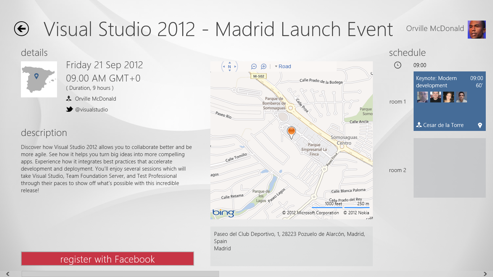
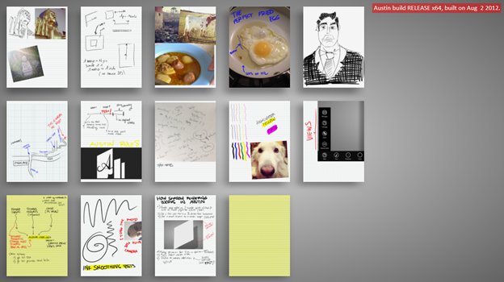

MY EVENTS Sample Modern App with Visual Studio 2012
Building the Sample
Software required:
- Visual Studio 2012
- Windows 8
- Bing Maps SDK for Metro style apps: http://visualstudiogallery.msdn.microsoft.com/bb764f67-6b2c-4e14-b2d3-17477ae1eaca
IMPORTANT: First of all, after downloading the .ZIP file and before unpackaging it, go the the .ZIP file properties and press the 'Unblock' button. Then, unpackage it. If you don't do it, you might get Visual Studio hung when trying to open the
solution. You can also get rid of that long path created by the long .ZIP name.
Other than that, you might get errors because of having a too long path.
Check that you have the required software dependencies, open the solution, select the Web project as default, and run it. The database will be generated for you using LocalDB and Entity Framework Initializers.
For more information about how to how to set it up in your dev machine and even in a full IIS environment, check this blog post from Cesar de la Torre: http://blogs.msdn.com/b/cesardelatorre/archive/2012/09/17/setting-the-sample-my-events-modern-application-up-amp-running.aspx
Description
The main goal of this sample modern application is to provide a sample app where you can see most of the new technologies related to Visual Studio 2012, in a practical
way.
Sample application context and scenarios
This sample application shows most of the new technologies you can use with Visual Studio 2012 in order to build Modern Apps.
The context is about an events/conferences management system called “My Events”.
It is composed by:
Central Web API Services:
This is the core of the system and these services are consumed by all the client apps.
Global Web-App (ASP.NET MVC4):
For potential attendees so they can browse and register to any published event, but also for events' owners, so anyone can create their own events with all the required data (description, tracks, sessions, speakers, etc.).

Organizers WPF App (WPF):
This is a data entry app which is oriented to organizers, especially when they are creating or updating events or even checking global statistics (simplified dashboard).

Organizers Windows 8 Store App (XAML/C#):
This app is also especially made for events' organizers, but in this case it should be used 'on the go' using a Windows 8 tablet, while running the events. Using this client app the organizers can check comments/feedback coming from attendees, registered people
to every sessions, etc.
Windows 8 Store App (XAML/C#)


Attendees Windows 8 Store App (HTML5/WinJS):
This app is especially made for attendees and it should be used 'on the go' using a Windows 8 tablet, while attending the events and when jumping from one session to another. This client app is very convenient as the attendess can see the live agenda and schedule
while checking what friends from FACEBOOK are attending to each session. They can also see the assigned room for each session, manually written notes assigned to some sessions and other information related to the events.


Austin/Journal App (manually written notes app) - C++ Windows Store App
Although this other sample app is not really part of 'MY EVENTS', you can also use it to create manually written notes using a Tablet, and then
share those notes through Windows 8 and assign any note to any specific conference session, so you can see it in the future.
You can download this app (and source code, from CODEPLEX) from a different URL, published by the Microsoft Visual C++ team:
http://blogs.msdn.com/b/vcblog/archive/2012/09/11/10348466.aspx?wa=wsignin1.0

Virtual Events Application (Avatar & KINECT for WINDOWS app)
This is a separated download URL, but related to the same apps' context and demos. This is the download URL for this other app:
http://code.msdn.microsoft.com/Virtual-Events-Sample-a0228a97
Windows 8 Store app (currently showed in a tablet):

Goals
This global system and the related client apps are highlighting the following points:
- Consumer end-user point of view with the latest UX technologies capabilities, typical of Modern-Apps.
- Enterprise and LOB (Line of Business) point of view, when using a desktop application.
- Cloud friendly. You can deploy very easily all the server assets (Web Api Services and Web app) into the Windows Azure cloud.
- Extensible and open to more complex scenarios. Even though our scenario’s main goal is to ‘keep it simple’, we wanted to be able to leave it open for future extensions and complexity that is usually required when implementing a real production
application.
- Multiple technical approaches. We wanted to illustrate how multiple technical approaches can co-exist within the same solution (Web, mainstream-app, CRUD, etc.)
- Easily deployable. The RI is easily deployable so that you can install it and experiment with it.
The selected technologies and frameworks used are the following:
-Core
* ASP.NET Web-API Services
* Entity Framework 5 (Code First)
* SQL Server LocalDB
-Web App
* ASP.NET MVC 4
* JavaScript &
JQuery consuming Web Api Services
-Windows 8 Store Apps
* Windows 8 Store App using HTML5/WinJS
* Windows 8 Store Apps using XAML/C#
-Desktop App
* WPF (Windows Presentation Foundation) App
What this sample application is NOT about
This is not a production application and it is not intended as a guidance for complex scenarios/applications, as it mostly covers CRUD and Data-Driven scenarios, only. If you need guidance for complex scenarios, we recommend to check guidance material from
the Microsoft Patterns & Practices group like the ‘CQRS Journey guidance’, which shows a reference application with a related functional domain & scope (Events/Conferences platform) but from a different point of view based on design-patterns
and best architectural practices for complex scenarios, covering approaches like CQRS (Command & Query Responsibility Segregation) & DDD (Domain Driven Design).
Wrap up
Therefore and as previously mentioned, our main objective is to highlight and show most of the new capabilities and technical possibilities offered by Visual Studio 2012 and all its related technologies in order to build
Modern Apps.